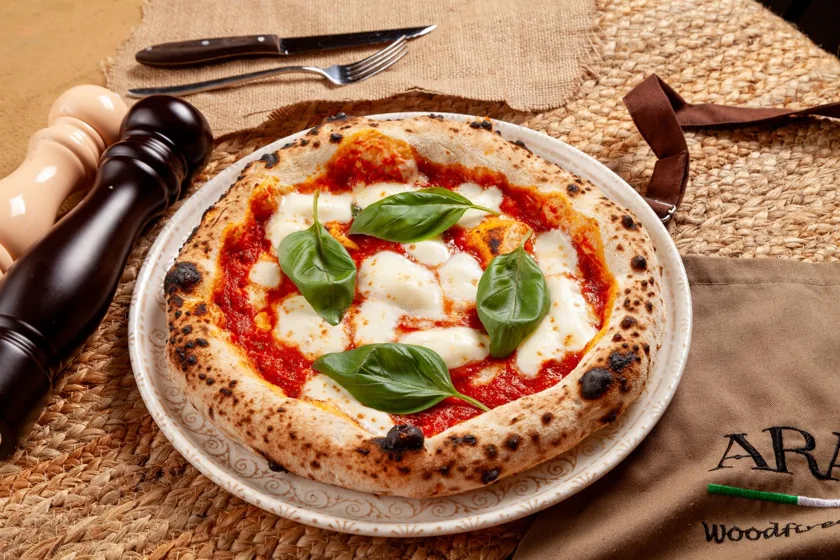
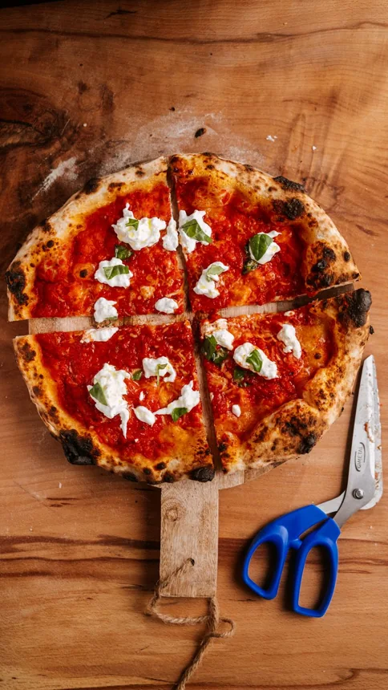
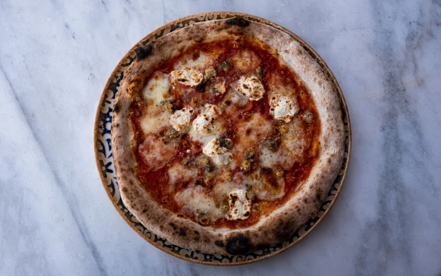
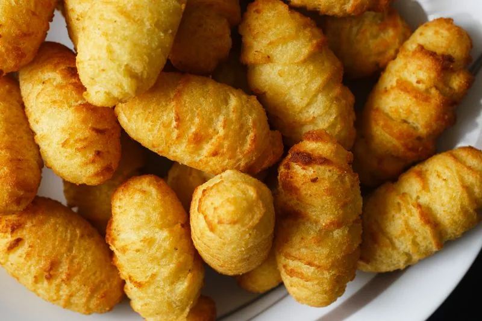
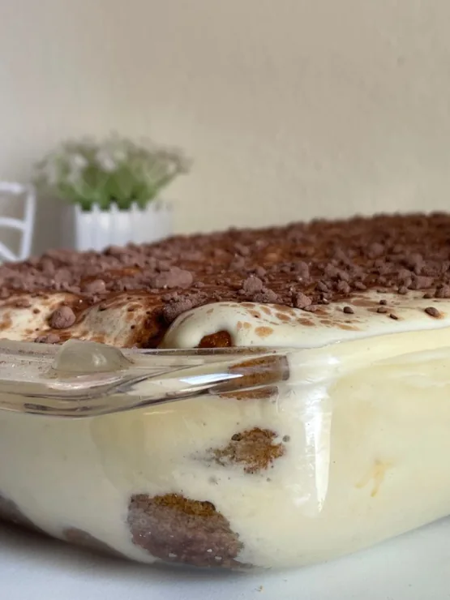

Un assaggio di come leggere e aggiornare il menu di stagione. Piatti, prezzi e fotografie sono dimostrativi.

Pomodoro, fiordilatte, basilico e olio extravergine.

Pomodoro, ciuffi di ricotta e basilico fresco.

Pomodoro, fiordilatte e origano profumato.

Una crosta dorata e un cuore morbido di patate.

Crema al mascarpone, caffè e una spolverata di cacao.